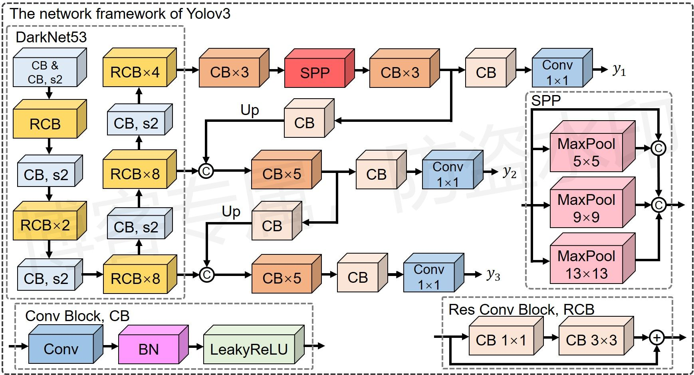
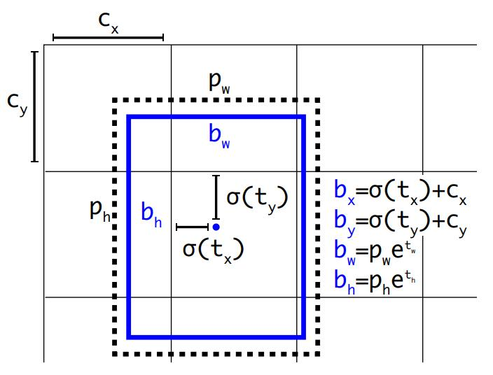

YOLOv3-SPP¶
综述¶
论文地址：https://arxiv.org/pdf/1804.02767v1.pdf
源码地址：https://github.com/ultralytics/yolov3
类型：一阶段目标检测（one-stage）
介绍¶
网络结构如下图所示：

结构图原创，使用请告知
注：卷积层具体的参数信息请参考：https://github.com/WZMIAOMIAO/deep-learning-for-image-processing/blob/master/pytorch_object_detection/yolov3_spp/yolov3spp.png
{kind=link}
细节¶
方便起见，将和前景物体匹配的锚点简称为前景锚点，只有前景锚点所对应的置信度分数才不为0。
网络结构
-
锚点尺寸：在COCO数据集上利用k-means聚类算法将锚点化为9个簇，(10,13), (16,30), (33,23), (30,61), (62,45), (59,119), (116,90), (156,198), (373,326)，并且均匀划分到3组预测特征层上；
-
每个锚点要预测(1+4+N)个数据，分别用于表示前景置信度、四个坐标数据的偏移量、类别预测分数，其中在测试阶段，当前景置信度大于某个阈值时，说明当前锚点上有前景物体，后续启用坐标偏移量计算边界框坐标以及类别预测分数得到物体类别；
- Backbone采用Darknet53网络结构，和ResNet152相比，精度类似但是速度比ResNet152快1倍；
- 和一般的特征提取网络相比，Darknet53中抛弃了池化操作，采用步长为2的卷积运算实现下采样功能，并且每个残差块中，先用1\times1的卷积压缩channel，之后再用3\times3的卷积恢复通道数；
- YOLOv3也采用了特征金字塔中自上而下的结构，将浅层特征与深层特征合并，用于预测多个尺度的物体；
- SPP模块通过将多个尺度下的池化运算结果相合并，有利于提升网络的感受野；
- 对于输出的置信度分数，需要先经过一次sigmoid归一化处理（和正常对分类任务的处理方式一样）。
训练阶段
测试阶段
- batch设为1，并且将原图的宽、高填充至32的整数倍（32为顶层特征图的感受野）；
- 筛选出前景置信度大于预设阈值的锚点，根据偏移量以及类别分数得到物体边界框坐标以及类别。
与Faster R-CNN的差异¶
锚点匹配策略不同
YOLO会多一个预测值，用于预测前景置信度，因此对于每个物体，YOLO首先匹配出属于哪个网格，计算出中心偏移量，再匹配出属于哪个锚点，得到前景置信度标签，最后再计算边界框宽高。（具体步骤可见《锚点-锚点匹配》）
注：Faster R-CNN中利用整张特征图上的所有锚点预测，因此需要首先构建锚点图，找出所有锚点在原图上对应的坐标数据，之后计算所有锚点和物体边界框之间的IoU，根据IoU对锚点打标签，由于涉及所有锚点的IOU计算，因此运算量较大，相比之下YOLO运算量较小。Faster R-CNN中一个边界框可能会匹配多个特征数据上的锚点（匹配所有可能的锚点，只要IOU足够大即可，不管属于哪个特征点，没有“中心”这一概念）。而YOLO设置了网格点这一概念，每个网格对应一个特征点，整个预测特征图中（对于每层而言），该物体边界框只会匹配一个网格，之后再从这一个网格上找预设锚点，找比较像的，大大降低了锚点匹配数量，降低了运算量，但同时这么操作会减小容错率，从而间接降低检测精度。
边界框回归策略不同
作者在YOLOv2的论文中指出原始的边界框回归策略由于没有限制偏移量的取值范围，容易导致中心点x,y可能会预测在图像的任何一点上，相对于当前预测点会产生较大的偏移，进一步导致训练时的不稳定。对此，作者做了改进，将每个预测特征点视为一个网格，将锚点中心的偏移量改为网格左上角坐标的偏移量，具体如下图所示：

其中b_x,b_y,b_w,b_h表示边界框的四个坐标数据（’xywh’格式），t_x,t_y,t_w,t_h依次表示四个坐标数据的偏移量，c_x,c_y表示网格左上角的坐标，p_w,p_h表示网格上对应锚点的宽高，\sigma(\cdot)表示\text{Sigmoid}归一化函数，可以将偏移量限制在(0,1)范围内，改进之后预测框的中心点被限制在锚点中心点所在的网格单元内，有利于模型的收敛。
注：这里一个特征点对应一个网格，同时一个特征点对应多个锚点，因此一个网格也对应多个锚点。
源码笔记¶
代码参考：
- https://github.com/WZMIAOMIAO/deep-learning-for-image-processing/tree/master/pytorch_object_detection/yolov3_spp
- https://github.com/ultralytics/yolov3
注：
- 图像预处理策略主要包括mosaic增强和仿射变换；
- 传入的
targets中的坐标数据是相对坐标，数据从0-1取值，0表示图片左侧、上侧，1表示图片右侧、下侧。因此在等比放缩图片时，不用额外处理边界框数据，只需要将相对数据乘以特征图、原图长宽，就可以得到物体在特征图、原图上的坐标； - 在计算损失时，对于每个所筛选的前景锚点（即物体中心所处的锚点），都对应一个标签，标签由3部分组成：前景锚点的序号（即哪个锚点对应当前物体，会利用GIoU做加权处理），中心坐标偏移量，边界框在特征图上的宽高，其中中心坐标偏移量与前景锚点序号具有对应关系，因此这里需要得到每个锚点的置信度、预测数据的中心坐标
x、y的偏移量以及预测的宽高w、h； - 坐标偏移量利用GIoU损失优化，分类损失（包括前景分类）利用交叉熵损失优化。
网络结构¶
class Darknet(nn.Module):
"""
YOLOv3 spp object detection model
"""
def __init__(self, cfg, img_size=(416, 416), verbose=False):
super(Darknet, self).__init__()
# 这里传入的img_size只在导出ONNX模型时起作用
self.input_size = [img_size] * 2 if isinstance(img_size, int) else img_size
# 解析网络对应的.cfg文件
self.module_defs = parse_model_cfg(cfg)
# 根据解析的网络结构一层一层去搭建
# self.module_list表示构建的模块；self.routs用于记录哪些层的特征图可能会后续被用到
# 如残差结构的特征融合，或特征拼接（类似FPN结构）
self.module_list, self.routs = create_modules(self.module_defs, img_size)
# 获取所有YOLOLayer层的索引
self.yolo_layers = get_yolo_layers(self)
# 打印下模型的信息，如果verbose为True则打印详细信息
self.info(verbose) if not ONNX_EXPORT else None # print model description
def forward(self, x, verbose=False):
return self.forward_once(x, verbose=verbose)
def forward_once(self, x, verbose=False):
# yolo_out收集每个yolo_layer层的输出
# out收集每个模块的输出
yolo_out, out = [], []
if verbose:
print('0', x.shape)
str = ""
# 遍历网络中所有的模块
for i, module in enumerate(self.module_list):
name = module.__class__.__name__
# 判断是否执行残差求和 或 特征拼接
if name in ["WeightedFeatureFusion", "FeatureConcat"]: # sum, concat
if verbose:
l = [i - 1] + module.layers # layers
sh = [list(x.shape)] + [list(out[i].shape) for i in module.layers] # shapes
str = ' >> ' + ' + '.join(['layer %g %s' % x for x in zip(l, sh)])
x = module(x, out) # WeightedFeatureFusion(), FeatureConcat()
# 预测层预测，预测结果存入yolo_out中
elif name == "YOLOLayer":
yolo_out.append(module(x))
else: # run module directly, i.e. mtype = 'convolutional', 'upsample', 'maxpool', 'batchnorm2d' etc.
x = module(x)
# out保存每个模块的输出
out.append(x if self.routs[i] else [])
if verbose:
print('%g/%g %s -' % (i, len(self.module_list), name), list(x.shape), str)
str = ''
if self.training: # train
return yolo_out
elif ONNX_EXPORT: # export
# x = [torch.cat(x, 0) for x in zip(*yolo_out)]
# return x[0], torch.cat(x[1:3], 1) # scores, boxes: 3780x80, 3780x4
p = torch.cat(yolo_out, dim=0)
# # 根据objectness虑除低概率目标
# mask = torch.nonzero(torch.gt(p[:, 4], 0.1), as_tuple=False).squeeze(1)
# # onnx不支持超过一维的索引（pytorch太灵活了）
# # p = p[mask]
# p = torch.index_select(p, dim=0, index=mask)
#
# # 虑除小面积目标，w > 2 and h > 2 pixel
# # ONNX暂不支持bitwise_and和all操作
# mask_s = torch.gt(p[:, 2], 2./self.input_size[0]) & torch.gt(p[:, 3], 2./self.input_size[1])
# mask_s = torch.nonzero(mask_s, as_tuple=False).squeeze(1)
# p = torch.index_select(p, dim=0, index=mask_s) # width-height 虑除小目标
#
# if mask_s.numel() == 0:
# return torch.empty([0, 85])
return p
else: # inference or test
x, p = zip(*yolo_out) # inference output, training output
x = torch.cat(x, 1) # cat yolo outputs
return x, p
def info(self, verbose=False):
"""
打印模型的信息
:param verbose:
:return:
"""
torch_utils.model_info(self, verbose)
def get_yolo_layers(self):
"""
获取网络中三个"YOLOLayer"模块对应的索引
:param self:
:return:
"""
return [i for i, m in enumerate(self.module_list) if m.__class__.__name__ == 'YOLOLayer'] # [89, 101, 113]
定义所有模块¶
def create_modules(modules_defs: list, img_size):
"""
Constructs module list of layer blocks from module configuration in module_defs
:param modules_defs: 通过.cfg文件解析得到的每个层结构的列表
:param img_size:
:return:
"""
img_size = [img_size] * 2 if isinstance(img_size, int) else img_size
# 删除解析cfg列表中的第一个配置(对应[net]的配置)
modules_defs.pop(0) # cfg training hyperparams (unused)
output_filters = [3] # input channels，用于存储每个层输出的特征图通道数，第一层为输入层，相当于是图片，通道数为3
module_list = nn.ModuleList()
# 统计哪些特征层的输出会被后续的层使用到(可能是特征融合，也可能是拼接)
routs = [] # list of layers which rout to deeper layers
yolo_index = -1
# 遍历搭建每个层结构，逐一构建
for i, mdef in enumerate(modules_defs):
modules = nn.Sequential()
if mdef["type"] == "convolutional":
bn = mdef["batch_normalize"] # 1 or 0 / use or not，1表示使用BN，0表示不使用
filters = mdef["filters"] # 卷积核的个数，即当前卷积层输出的通道数
k = mdef["size"] # kernel size
stride = mdef["stride"] if "stride" in mdef else (mdef['stride_y'], mdef["stride_x"])
if isinstance(k, int):
# mdef["pad"]表示是否启用padding
modules.add_module("Conv2d", nn.Conv2d(in_channels=output_filters[-1],
out_channels=filters,
kernel_size=k,
stride=stride,
padding=k // 2 if mdef["pad"] else 0,
bias=not bn))
else:
raise TypeError("conv2d filter size must be int type.")
if bn:
modules.add_module("BatchNorm2d", nn.BatchNorm2d(filters))
else:
# 如果该卷积操作没有bn层，意味着该层为yolo的predictor（除了预测层，所有的卷积层都接BN层）
routs.append(i) # detection output (goes into yolo layer)
if mdef["activation"] == "leaky": # 和BN一样，正常的卷积层都接leaky
modules.add_module("activation", nn.LeakyReLU(0.1, inplace=True))
else:
pass
elif mdef["type"] == "BatchNorm2d":
pass
# spp结构，多个maxpool并联
elif mdef["type"] == "maxpool":
k = mdef["size"] # kernel size
stride = mdef["stride"]
modules = nn.MaxPool2d(kernel_size=k, stride=stride, padding=(k - 1) // 2)
elif mdef["type"] == "upsample":
if ONNX_EXPORT: # explicitly state size, avoid scale_factor
g = (yolo_index + 1) * 2 / 32 # gain
modules = nn.Upsample(size=tuple(int(x * g) for x in img_size))
else:
modules = nn.Upsample(scale_factor=mdef["stride"])
# 一个值时表示指向某一层的输出，多个值时表示拼接多层的输出
# 用于拼接多个预测层的特征数据，类似FPN结构
elif mdef["type"] == "route": # [-2], [-1,-3,-5,-6], [-1, 61]
layers = mdef["layers"]
# +1表示加上输入层那个序号
# filters表示当前层输出特征图通道数，有拼接操作的话就要将多个通道数求和
filters = sum([output_filters[l + 1 if l > 0 else l] for l in layers])
# i表示当前层
routs.extend([i + l if l < 0 else l for l in layers]) # 记录使用哪些层的输出
modules = FeatureConcat(layers=layers)
# 相当于是残差连接
elif mdef["type"] == "shortcut":
# 一般是以前面数第三个模块输出的特征图做残差连接，也就是layers=-3
layers = mdef["from"]
# 提取上一层输出特征的特征图通道数
filters = output_filters[-1]
# routs.extend([i + l if l < 0 else l for l in layers])
routs.append(i + layers[0])
modules = WeightedFeatureFusion(layers=layers, weight="weights_type" in mdef)
elif mdef["type"] == "yolo":
# 也就是预测特征层
yolo_index += 1 # 记录是第几个yolo_layer [0, 1, 2]
stride = [32, 16, 8] # 预测特征层对应原图的缩放比例，相当于感受野
# anchor个数和预测个数相关
# mdef["anchors"][mdef["mask"]传入的是当前预测层的锚点宽高尺寸
modules = YOLOLayer(anchors=mdef["anchors"][mdef["mask"]], # anchor list
nc=mdef["classes"], # number of classes
img_size=img_size,
stride=stride[yolo_index])
# Initialize preceding Conv2d() bias (https://arxiv.org/pdf/1708.02002.pdf section 3.3)
try:
# 对预测层做初始化
j = -1
# bias: shape(255,) 索引0对应Sequential中的Conv2d
# view: shape(3, 85)，这里b就相当于提取了conv2d中的偏置参数
b = module_list[j][0].bias.view(modules.na, -1)
b.data[:, 4] += -4.5 # obj
b.data[:, 5:] += math.log(0.6 / (modules.nc - 0.99)) # cls (sigmoid(p) = 1/nc)
module_list[j][0].bias = torch.nn.Parameter(b.view(-1), requires_grad=True)
except Exception as e:
print('WARNING: smart bias initialization failure.', e)
else:
print("Warning: Unrecognized Layer Type: " + mdef["type"])
# Register module list and number of output filters
# 将构建的预测模块放进去
module_list.append(modules)
output_filters.append(filters)
routs_binary = [False] * len(modules_defs)
for i in routs:
# 这里routs_binary用于统计哪些特征层的输出会被后续的层使用到(可能是特征融合，也可能是拼接)
# 会被用到的设为True
routs_binary[i] = True
return module_list, routs_binary
定义特征融合操作¶
包括残差结构的融合、特征图的拼接
class FeatureConcat(nn.Module):
"""
将多个特征矩阵在channel维度进行concatenate拼接
"""
def __init__(self, layers):
super(FeatureConcat, self).__init__()
self.layers = layers # layer indices
# self.multiple用于判断是合并多个输出特征还是引出当前输出层
self.multiple = len(layers) > 1 # multiple layers flag
def forward(self, x, outputs):
# 这里的outputs是正向传播时传入的，和定义网络时的outputs不一样
return torch.cat([outputs[i] for i in self.layers], 1) if self.multiple else outputs[self.layers[0]]
class WeightedFeatureFusion(nn.Module): # weighted sum of 2 or more layers https://arxiv.org/abs/1911.09070
"""
将多个特征矩阵的值进行融合(add操作)
"""
def __init__(self, layers, weight=False):
super(WeightedFeatureFusion, self).__init__()
self.layers = layers # layer indices
self.weight = weight # apply weights boolean
self.n = len(layers) + 1 # number of layers 融合的特征矩阵个数
if weight: # 默认不额外设置weight，只作纯加法
self.w = nn.Parameter(torch.zeros(self.n), requires_grad=True) # layer weights
def forward(self, x, outputs):
# Weights
if self.weight:
w = torch.sigmoid(self.w) * (2 / self.n) # sigmoid weights (0-1)
x = x * w[0]
# Fusion
nx = x.shape[1] # input channels
for i in range(self.n - 1):
# outputs表示用于融合的特征(一般是前几层)，x表示当前层特征
a = outputs[self.layers[i]] * w[i + 1] if self.weight else outputs[self.layers[i]] # feature to add
na = a.shape[1] # feature channels
# Adjust channels
# 根据相加的两个特征矩阵的channel选择相加方式
if nx == na: # same shape 如果channel相同，直接相加
x = x + a # 一般是用这个分支，直接相加
elif nx > na: # slice input 如果channel不同，将channel多的特征矩阵砍掉部分channel保证相加的channel一致
x[:, :na] = x[:, :na] + a # or a = nn.ZeroPad2d((0, 0, 0, 0, 0, dc))(a); x = x + a
else: # slice feature
x = x + a[:, :nx]
return x
定义预测层¶
class YOLOLayer(nn.Module):
"""
对YOLO的输出进行处理
注意:预测数值已经由YOLOLayer的上一层完成，具体可见my_yolov3.cfg文件
YOLOLayer只是用于生成网格坐标数据，即锚点图，测试阶段中，锚点图和上一层预测的数据结合可以得到真实坐标数据
"""
def __init__(self, anchors, nc, img_size, stride):
super(YOLOLayer, self).__init__()
# anchors表示当前预测层锚点的宽高尺寸
self.anchors = torch.Tensor(anchors)
self.stride = stride # layer stride 特征图上一步对应原图上的步距 [32, 16, 8]
self.na = len(anchors) # 锚点的个数
self.nc = nc # 类别个数 number of classes (80) coco默认80
self.no = nc + 5 # 每个锚点对应多少个输出数据，和类别数相关number of outputs (85: x, y, w, h, obj, cls1, ...)
self.nx, self.ny, self.ng = 0, 0, (0, 0) # initialize number of x, y gridpoints
# 将anchors大小缩放到grid尺度
# 传入的anchors都是在原图上的尺度数据，这里除以self.stride表明转为当前特征图尺度
self.anchor_vec = self.anchors / self.stride
# batch_size, na, grid_h, grid_w(网格高宽), wh,
# 值为1的维度对应的值不是固定值，后续操作可根据broadcast广播机制自动扩充
self.anchor_wh = self.anchor_vec.view(1, self.na, 1, 1, 2)
self.grid = None
if ONNX_EXPORT:
self.training = False
self.create_grids((img_size[1] // stride, img_size[0] // stride)) # number x, y grid points
def create_grids(self, ng=(13, 13), device="cpu"):
"""
更新grids信息并生成新的grids参数
:param ng: 特征图大小
:param device:
:return:
"""
self.nx, self.ny = ng
self.ng = torch.tensor(ng, dtype=torch.float)
# build xy offsets 构建每个cell处的anchor的xy偏移量(在feature map上的)
if not self.training: # 训练模式不需要回归到最终预测boxes
# 网格的x坐标和y坐标（每个网格的左上角坐标，每个格子表示一个像素点，因此这里坐标间距为1）
yv, xv = torch.meshgrid([torch.arange(self.ny, device=device),
torch.arange(self.nx, device=device)])
# 尺寸为(batch_size, na, grid_h, grid_w, wh)，wh表示xy坐标，有两个值
self.grid = torch.stack((xv, yv), 2).view((1, 1, self.ny, self.nx, 2)).float()
if self.anchor_vec.device != device:
self.anchor_vec = self.anchor_vec.to(device)
self.anchor_wh = self.anchor_wh.to(device)
# p表示预测结果
# 训练阶段只需要调整一下尺寸（根据锚点预设情况调整），直接返回即可
# 测试阶段需要和锚点坐标相结合，计算得到原图上的绝对坐标值
def forward(self, p):
if ONNX_EXPORT:
bs = 1 # batch size
else:
# ny，nx分别表示预测特征图的高宽，间接体现了参与预测的锚点数量
# ny*nx*每个特征点上的锚点数量=锚点总数，对应p的第二维度尺寸，这里为75
bs, _, ny, nx = p.shape # batch_size, predict_param(255), grid(13), grid(13)
if (self.nx, self.ny) != (nx, ny) or self.grid is None: # fix no grid bug
# 先将特征图尺寸
# 测试阶段中，利用预测特征图尺寸计算网格序号，存入self中，后续和预测结果结合，生成边界框坐标值
self.create_grids((nx, ny), p.device)
# view: (batch_size, 255, 13, 13) -> (batch_size, 3, 85, 13, 13)
# permute: (batch_size, 3, 85, 13, 13) -> (batch_size, 3, 13, 13, 85)
# [bs, anchor, grid, grid, xywh + obj + classes]
p = p.view(bs, self.na, self.no, self.ny, self.nx).permute(0, 1, 3, 4, 2).contiguous() # prediction
# self.training=False
if self.training:
return p
elif ONNX_EXPORT:
# Avoid broadcasting for ANE operations
m = self.na * self.nx * self.ny # 3*
ng = 1. / self.ng.repeat(m, 1)
grid = self.grid.repeat(1, self.na, 1, 1, 1).view(m, 2)
anchor_wh = self.anchor_wh.repeat(1, 1, self.nx, self.ny, 1).view(m, 2) * ng
p = p.view(m, self.no)
# xy = torch.sigmoid(p[:, 0:2]) + grid # x, y
# wh = torch.exp(p[:, 2:4]) * anchor_wh # width, height
# p_cls = torch.sigmoid(p[:, 4:5]) if self.nc == 1 else \
# torch.sigmoid(p[:, 5:self.no]) * torch.sigmoid(p[:, 4:5]) # conf
p[:, :2] = (torch.sigmoid(p[:, 0:2]) + grid) * ng # x, y
p[:, 2:4] = torch.exp(p[:, 2:4]) * anchor_wh # width, height
p[:, 4:] = torch.sigmoid(p[:, 4:])
p[:, 5:] = p[:, 5:self.no] * p[:, 4:5]
return p
else:
# inference 测试模式，预测结果和网格坐标结合，得到绝对坐标
# [bs, anchor, grid, grid, xywh + obj + classes]
io = p.clone() # inference output
# ...表示其他维度均全选
# 计算在feature map上的xy坐标
# 这里以及下面都是得到相对坐标，相对于特征图尺寸的坐标，后续再乘以步长就可以得到原图上的绝对坐标
io[..., :2] = torch.sigmoid(io[..., :2]) + self.grid # xy
# 计算在feature map上的wh
io[..., 2:4] = torch.exp(io[..., 2:4]) * self.anchor_wh # wh yolo method
# 换算映射回原图尺度，转换成原图的绝对坐标
io[..., :4] *= self.stride
# 将分类结果传入sigmoid，这里也包括前景置信度分类结果
torch.sigmoid_(io[..., 4:])
return io.view(bs, -1, self.no), p # view [1, 3, 13, 13, 85] as [1, 507, 85]
损失的计算¶
def compute_loss(p, targets, model): # predictions, targets, model
# 传入预测值和物体标签数据，这里标签含图片序号(一个batch内部)、物体类别、边界框坐标数据(相对坐标，数值范围从0-1)
device = p[0].device
lcls = torch.zeros(1, device=device) # Tensor(0)
lbox = torch.zeros(1, device=device) # Tensor(0)
lobj = torch.zeros(1, device=device) # Tensor(0)
# tcls表示物体类别
# tbox表示gt box相对anchor的x,y偏移量以及w,h(w,h不是偏移量，是特征图上边界框的宽高)
# indices表示序号，存有[图片序号，锚点序号(当前物体和第几个锚地匹配)，网格序号(对应横纵坐标两个数据)]
# anch存有锚点宽高尺寸(相对于特征图而言)
tcls, tbox, indices, anchors = build_targets(p, targets, model) # targets
h = model.hyp # hyperparameters
red = 'mean' # Loss reduction (sum or mean)
# Define criteria
BCEcls = nn.BCEWithLogitsLoss(pos_weight=torch.tensor([h['cls_pw']], device=device), reduction=red)
BCEobj = nn.BCEWithLogitsLoss(pos_weight=torch.tensor([h['obj_pw']], device=device), reduction=red)
# class label smoothing https://arxiv.org/pdf/1902.04103.pdf eqn 3
cp, cn = smooth_BCE(eps=0.0)
# focal loss
g = h['fl_gamma'] # focal loss gamma
# fl_gamma大于0就表示使用focal loss，默认不使用
if g > 0:
BCEcls, BCEobj = FocalLoss(BCEcls, g), FocalLoss(BCEobj, g)
# per output
for i, pi in enumerate(p): # layer index, layer predictions
b, a, gj, gi = indices[i] # image_idx, anchor_idx, grid_y, grid_x
tobj = torch.zeros_like(pi[..., 0], device=device) # target obj
nb = b.shape[0] # number of positive samples
if nb:
# 对应匹配到正样本的预测信息
ps = pi[b, a, gj, gi] # prediction subset corresponding to targets
# GIoU 计算GIoU值
# 计算预测的x,y的偏移量
pxy = ps[:, :2].sigmoid()
# 结合锚点情况 计算预测得到的w、h
pwh = ps[:, 2:4].exp().clamp(max=1E3) * anchors[i]
pbox = torch.cat((pxy, pwh), 1) # predicted box
# 计算giou值
giou = bbox_iou(pbox.t(), tbox[i], x1y1x2y2=False, GIoU=True) # giou(prediction, target)
lbox += (1.0 - giou).mean() # giou loss
# Obj
# 利用GIOU对匹配到的前景锚点加权处理，表示相交的部分越大，置信度越大
tobj[b, a, gj, gi] = (1.0 - model.gr) + model.gr * giou.detach().clamp(0).type(tobj.dtype) # giou ratio
# Class，只有类别数大于1时，才启用分类器
if model.nc > 1: # cls loss (only if multiple classes)
# 将类别序号转为独热编码
t = torch.full_like(ps[:, 5:], cn, device=device) # targets
t[range(nb), tcls[i]] = cp
# 每个类依次做二元交叉熵损失
# 5:表示只提取类别预测分数
lcls += BCEcls(ps[:, 5:], t) # BCE
# Append targets to text file
# with open('targets.txt', 'a') as file:
# [file.write('%11.5g ' * 4 % tuple(x) + '\n') for x in torch.cat((txy[i], twh[i]), 1)]
# 置信度损失，4表示取出第五个数值，对应预测的置信度
# tobj是置信度标签，大部分数是0，前景锚点取值范围为0-1
lobj += BCEobj(pi[..., 4], tobj) # obj loss
# 乘上每种损失的对应权重
lbox *= h['giou']
lobj *= h['obj']
lcls *= h['cls']
# loss = lbox + lobj + lcls
return {"box_loss": lbox,
"obj_loss": lobj,
"class_loss": lcls}
标签数据的匹配¶
def build_targets(p, targets, model):
# Build targets for compute_loss(), input targets(image_idx,class,x,y,w,h)
nt = targets.shape[0]
tcls, tbox, indices, anch = [], [], [], []
gain = torch.ones(6, device=targets.device).long() # normalized to gridspace gain
multi_gpu = type(model) in (nn.parallel.DataParallel, nn.parallel.DistributedDataParallel)
for i, j in enumerate(model.yolo_layers): # j: [89, 101, 113]
# 获取该yolo predictor对应的anchors
# 注意anchor_vec是anchors缩放到对应特征层上的尺度，因此这里的锚点尺寸是相对于特征图的尺寸(特征图上每个像素点之间的距离视为1)
anchors = model.module.module_list[j].anchor_vec if multi_gpu else model.module_list[j].anchor_vec
# p[i].shape: [batch_size, 3, grid_h, grid_w, num_params]
# gain表示预测特征层的尺寸，后续和targets中储存的相对坐标相乘，会得到特征图上的绝对坐标
gain[2:] = torch.tensor(p[i].shape)[[3, 2, 3, 2]] # xyxy gain
na = anchors.shape[0] # number of anchors，默认3
# [3] -> [3, 1] -> [3, nt]
at = torch.arange(na).view(na, 1).repeat(1, nt) # anchor tensor, same as .repeat_interleave(nt)
# t表示特征图上target的绝对坐标，targets相对坐标乘以特征图尺寸得到
a, t, offsets = [], targets * gain, 0
# Match targets to anchors，将标签和锚点做匹配
if nt:
# 通过计算anchor模板与所有target的wh_iou来匹配正样本
# j: [3, nt] , iou_t = 0.20
# 如果存在target的话，这里先将target中所有的目标与锚点做一次匹配
# 每个目标匹配一个锚点模板，匹配出与目标边界框宽高比例像的锚点模板
# j里行表示每个特征上的锚点数量，列表书target目标数量
# True所在的行表示与target目标(所在的列)所匹配的锚点模板序号
# 注意，这里只是讲target和锚点模板匹配，并不会得到和网格中第几个锚点匹配
j = wh_iou(anchors, t[:, 4:6]) > model.hyp['iou_t'] # iou(3,n) = wh_iou(anchors(3,2), gwh(n,2))
# t.repeat(na, 1, 1): [nt, 6] -> [3, nt, 6]
# 获取正样本对应的anchor模板与target信息(先粗略将匹配的锚点模板表示为正类锚点)
# 若一个边界框标签匹配到多个锚点模板，则对应t会被“复制”多次
a, t = at[j], t.repeat(na, 1, 1)[j] # filter
# Define
# long等于to(torch.int64), 数值向下取整
# b、c分别表示:图片序号image_idx(一个batch内的序号), 物体类别class
b, c = t[:, :2].long().T
# target的中心坐标，物体边界框的中点
gxy = t[:, 2:4] # grid xy
# 物体边界框的宽高(相对于特征图而言)
gwh = t[:, 4:6] # grid wh
# 匹配targets所在的grid cell左上角坐标
# 上下取整，得到左上角坐标
gij = (gxy - offsets).long()
gi, gj = gij.T # grid xy indices
# Append
# gain[3]: grid_h, gain[2]: grid_w
# image_idx, anchor_idx, grid indices(y, x)
indices.append((b, a, gj.clamp_(0, gain[3]-1), gi.clamp_(0, gain[2]-1)))
# gt box相对anchor的x,y偏移量以及w,h
tbox.append(torch.cat((gxy - gij, gwh), 1))
anch.append(anchors[a]) # anchors
tcls.append(c) # class
if c.shape[0]: # if any targets
# 目标的标签数值不能大于给定的目标类别数
assert c.max() < model.nc, 'Model accepts %g classes labeled from 0-%g, however you labelled a class %g. ' \
'See https://github.com/ultralytics/yolov3/wiki/Train-Custom-Data' % (
model.nc, model.nc - 1, c.max())
# tcls表示物体类别
# tbox表示gt box相对anchor的x,y偏移量以及w,h(w,h不是偏移量，是特征图上边界框的宽高)
# indices表示序号，存有[图片序号，锚点序号(当前物体和第几个锚地匹配)，网格序号(前景锚点的位置，对应横纵坐标两个数据)]
# anch存有锚点宽高尺寸(相对于特征图而言)
return tcls, tbox, indices, anch
计算GIoU
# 这里传入中心坐标的偏移量、以及每个边界框的宽高
# 由于box1和box2对应位置的中心坐标是相同的，因此偏移量在这里可以看成中心坐标
def bbox_iou(box1, box2, x1y1x2y2=True, GIoU=False, DIoU=False, CIoU=False):
# Returns the IoU of box1 to box2. box1 is 4, box2 is nx4
box2 = box2.t()
# Get the coordinates of bounding boxes
if x1y1x2y2: # x1, y1, x2, y2 = box1
b1_x1, b1_y1, b1_x2, b1_y2 = box1[0], box1[1], box1[2], box1[3]
b2_x1, b2_y1, b2_x2, b2_y2 = box2[0], box2[1], box2[2], box2[3]
else: # transform from xywh to xyxy
b1_x1, b1_x2 = box1[0] - box1[2] / 2, box1[0] + box1[2] / 2
b1_y1, b1_y2 = box1[1] - box1[3] / 2, box1[1] + box1[3] / 2
b2_x1, b2_x2 = box2[0] - box2[2] / 2, box2[0] + box2[2] / 2
b2_y1, b2_y2 = box2[1] - box2[3] / 2, box2[1] + box2[3] / 2
# Intersection area
# 计算相交区域的面积
inter = (torch.min(b1_x2, b2_x2) - torch.max(b1_x1, b2_x1)).clamp(0) * \
(torch.min(b1_y2, b2_y2) - torch.max(b1_y1, b2_y1)).clamp(0)
# Union Area
# 计算相并区域的面积，两个边界框面积相加，再减去相交的面积，类似容斥定理
w1, h1 = b1_x2 - b1_x1, b1_y2 - b1_y1
w2, h2 = b2_x2 - b2_x1, b2_y2 - b2_y1
union = (w1 * h1 + 1e-16) + w2 * h2 - inter
# 得到iou值
iou = inter / union # iou
if GIoU or DIoU or CIoU:
# 计算大边界框的宽高，进一步计算面积
cw = torch.max(b1_x2, b2_x2) - torch.min(b1_x1, b2_x1) # convex (smallest enclosing box) width
ch = torch.max(b1_y2, b2_y2) - torch.min(b1_y1, b2_y1) # convex height
if GIoU: # Generalized IoU https://arxiv.org/pdf/1902.09630.pdf
c_area = cw * ch + 1e-16 # convex area
# 返回GIoU
return iou - (c_area - union) / c_area # GIoU
if DIoU or CIoU: # Distance or Complete IoU https://arxiv.org/abs/1911.08287v1
# convex diagonal squared 计算对角线的平方
c2 = cw ** 2 + ch ** 2 + 1e-16
# centerpoint distance squared
# 计算两个矩形中点的欧式距离
rho2 = ((b2_x1 + b2_x2) - (b1_x1 + b1_x2)) ** 2 / 4 + ((b2_y1 + b2_y2) - (b1_y1 + b1_y2)) ** 2 / 4
if DIoU:
# 返回DIoU值
return iou - rho2 / c2 # DIoU
elif CIoU: # https://github.com/Zzh-tju/DIoU-SSD-pytorch/blob/master/utils/box/box_utils.py#L47
# 额外计算α和v两个变量
v = (4 / math.pi ** 2) * torch.pow(torch.atan(w2 / h2) - torch.atan(w1 / h1), 2)
with torch.no_grad():
alpha = v / (1 - iou + v)
return iou - (rho2 / c2 + v * alpha) # CIoU
return iou
初步完稿于：2023年2月15日
注：以上仅是笔者个人见解，若有问题，欢迎指正。